KOCW 세종대 이원준 교수님 (Interconnect 1&2)
1. Interconnect 1
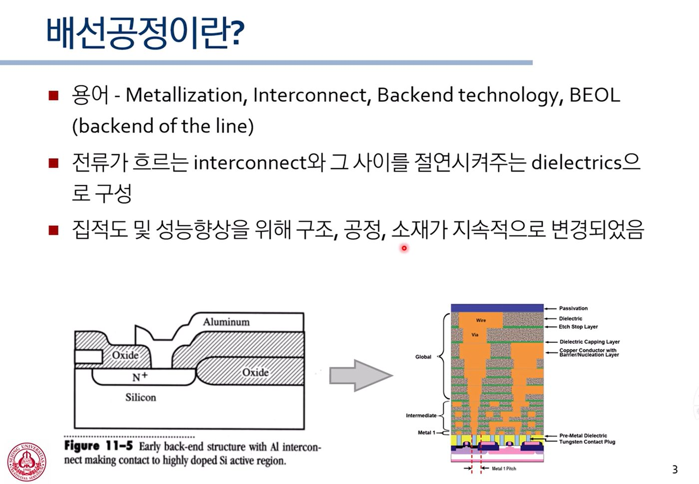
- Al을 사용하다가 W을 사용한게 1980년대 1990년대
- Cu를 사용하기 시작한게 2000년대 초
- 2019년 이때 쯤 부터는 Co가 사용
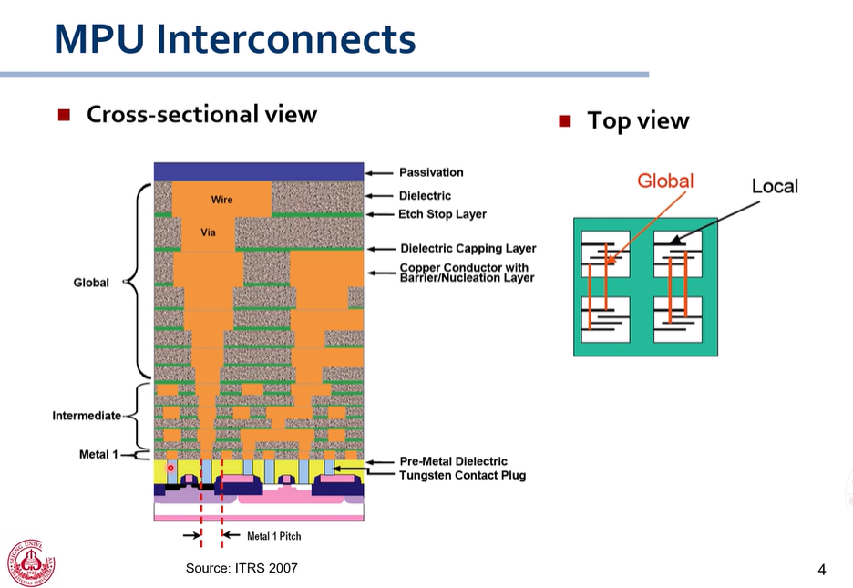
- 위쪽으로 갈 수록 구리 배선 폭이 두껍고 넓어지는 것은 R=비저항 L/A와 관련이 있다. 이는 결국 저항, 그리고 RC delay와 관련있다.
*PMD는 Metal1 나오기 전 절연체를 지칭
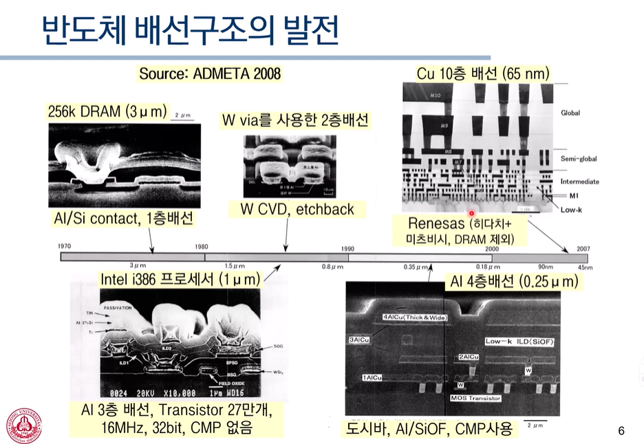
- 트렌지스터의 사이즈는 점점 작아지고, 위로 올라가는 배선은 점점 복잡해진다.
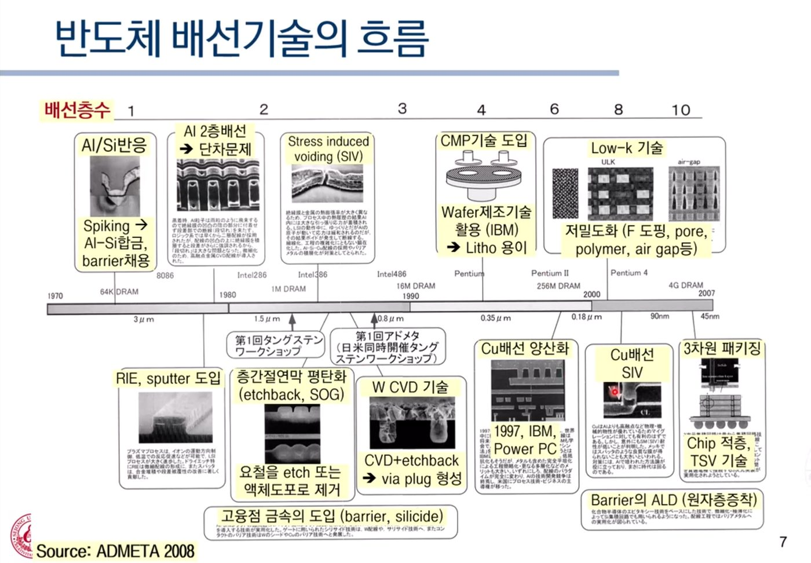
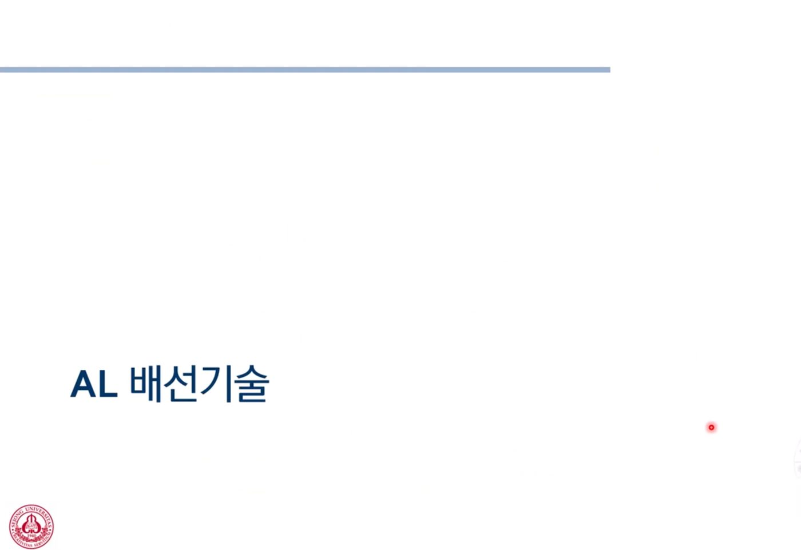
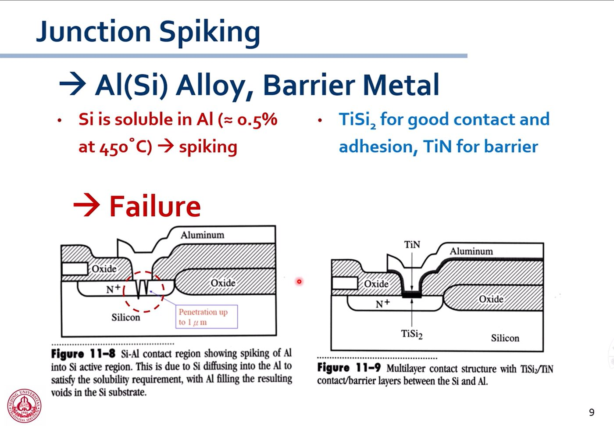
- 초창기에는 순수한 Al을 사용했고, 이에 따라 Si-Al에서 spiking 현상이 일어났다.
- Al 위에 Si3N4를 증착하고 Annealing을 할 때 문제가 생긴다. (왜 Si3N4를 증착하는지는 나중에 공부)
- Al과 Si는 450도에서 Annealing 할 때 Al 안으로 Si가 0.5% 녹아들어가게 된다. (by 상태도) = 고용도가 450도 기준 0.5%라는 말
- Si이 녹아나가기 때문에 점점 Si 영역이 Al로 들어가면 Si 쪽으로 마치 Al이 파고드는 상태가 됨
- 그러면 언제는 spiking이 1um 이상 일어나고 PN 접합자체를 뚫어버리면 문제가 생김
해결 방법 1 (Al에 미리 Si를 녹여두자)
- Al에 Si를 미리 1%정도 녹여두면, 고용한계보다 더 많이 녹아있기 때문에 녹지 않는다.
해결 방법 2 (Barrier Metal을 사용하자)
- Al이 확산해 들어가는 것을 TiN을 통해서 막자. 이러면 Pure AI을 사용할 수 있다.
2. Pure한 Al의 다양한 문제들
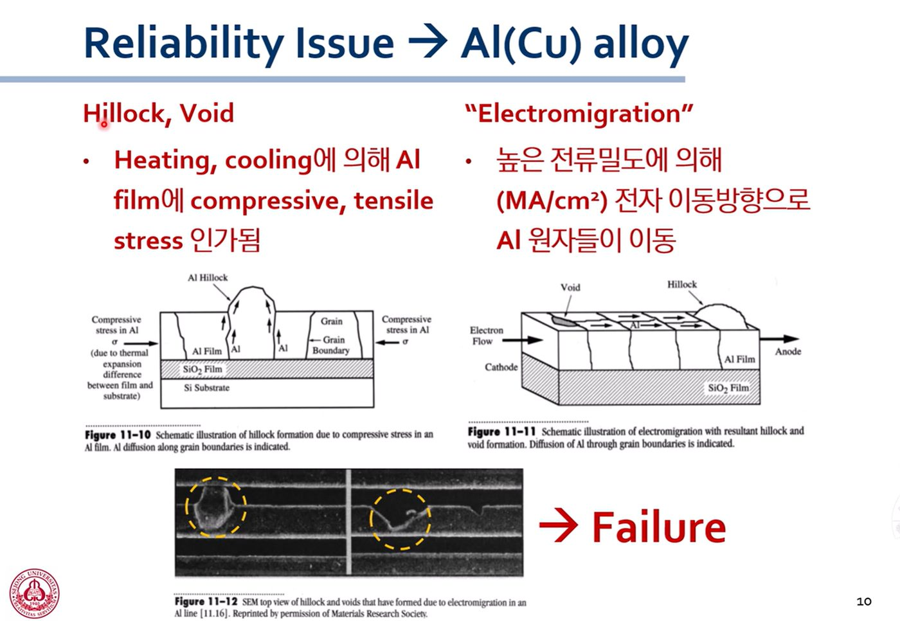
- Si과 Al의 열팽창 계수 차이가 있다. Si의 결합이 더 단단하고, Al은 열팽창 계수가 커서 많이 늘어날 수 있다. Si는 700um 정도되고, Al은 박막이니까 훨씬 얇다.
(1) Heating 할 때
- Al는 많이 늘어날 수 있는데, Si의 두께로 인해 Si으로부터 지배 받게 된다. Al은 늘어나고 싶은데 못늘어나서 압축(Compression) Stress가 걸린다.
- 따라서 이러한 Stress를 해소하기 위해 위로 볼록 튀어나와버리는 hillock 현상이 생기게 된다.
– 이때 항복응력(강도) 이전에서 이러한 현상이 나타난다고 함.
→ 당연히 그럴 것 같은게 파괴 되는 걸 논하는 있지는 않잖아?
– 450도 정도에서 Annealing 공정을 거치게 되면 Al의 결정립계에서의 원자(?) 확산 속도가 빨라지기 때문에 이러한 hillock이 생길 수 있다.
해결책: Cu 넣어주기 (Hillock & Electromigration 해결)
- Cu를 조금 넣어주게 되면 Cu가 Al 원자 이동을 방해하게 된다.
- Cu는 식각은 되지만 식각 후 부산물(찌꺼기) 처리가 어렵다.
- Al 자체의 비저항은 2.67 인데, Cu를 x% 만큼 넣게 되면 비저항이 계속해서 커지게 된다. → Alloy를 만들면 당연하게도 비저항이 커지니까
- 그래서 지금 쓸 때는 0.5% 넣어서 사용하고 있다. 이렇게 되면 Hillock도 방지하고, Electromigration도 막아주게 된다. 전자들이 이동하면서 Al을 때리고 우측의 그림처럼
(2) Cooling 할 때
- Cooling 할 때 Al 박막은 확 줄어들려고 하는데 Si가 버티고 있으니 Tensile stress가 걸리고 그에 따라 Tensile stress 가 걸려 Void가 생길 수 있다.
→ 결국에 Hillock, Void 둘다 Failure의 원인이며 실제로는 Void 현상이 더 많이 생긴다고 한다. 왜냐하면 Al 위에 절연체(Oxide)가 덮고 있기 때문에 hillock 처럼 밀고 올라가는게 쉽지 않다. 그래서 void가 더 많이 생기는 것이다. 그리고 또 위에 절연체에 의해서 줄어들지 못하는게 더 심해진다. 사방에서 Tensile stress를 걸고 있는 꼴이기 때문이다.
그래서 물질 자체를 Al 에서 Cu로, Co로 바꾸려고 하는건 이러한 부작용들이 소재 특성으로 인해 덜 생기기 때문이다. 그게 원자 간 결합 세기가 강해서 그럴 수도 있고 등등… (뒤에서 배우지 않을까?)
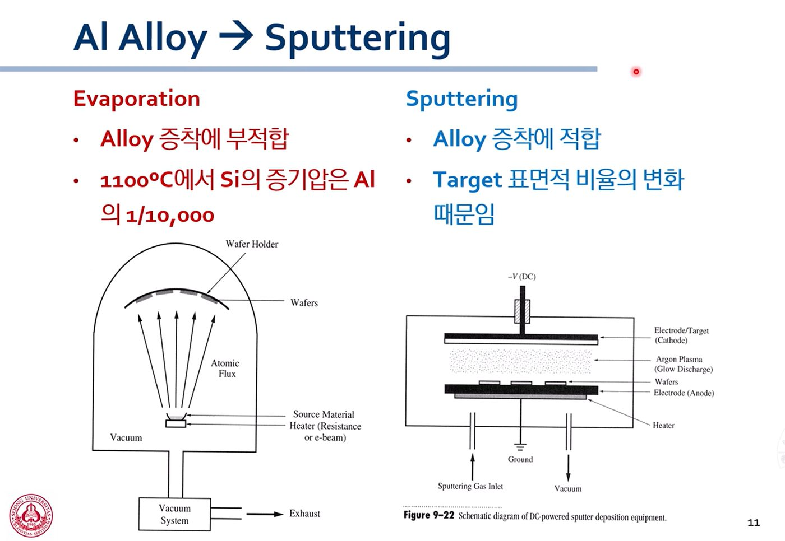
- Alloy를 사용해야하기 때문에 Evaporation이 아니라 Sputtering 방식으로 Target을 Alloy로 만들어서 사용한다.
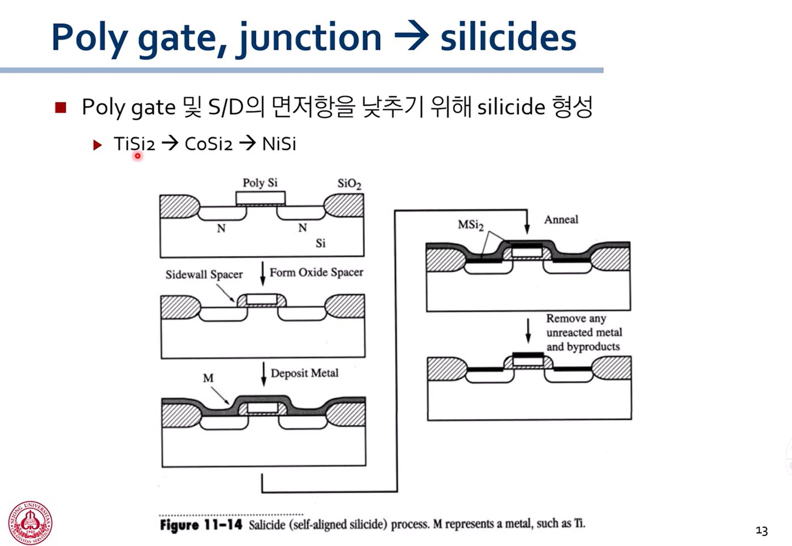
- Poly-Si gate와 Source Drain의 면저항을 낮추기 위해서 Silicide를 사용한다.
- 접촉 저항을 낮춰주는 Silicide는 이런식으로 형성한다.
- 이때 Metal이 증착이 되고 4번째에서 5번째로 넘어가게 된다. 이 때 부분적으로 Etch는 Metal과 Si의 접촉 부분이 아닌 곳에서는 Silicide가 형성되지 않기 때문에 선택비를 이용해서 Wet Etch를 시켜준다.
- 최종 결과물은 금속 위에 Silicide가 존재하고, 절연체 위에는 Wet etch가 되어 아무것도 존재하지 않는다.
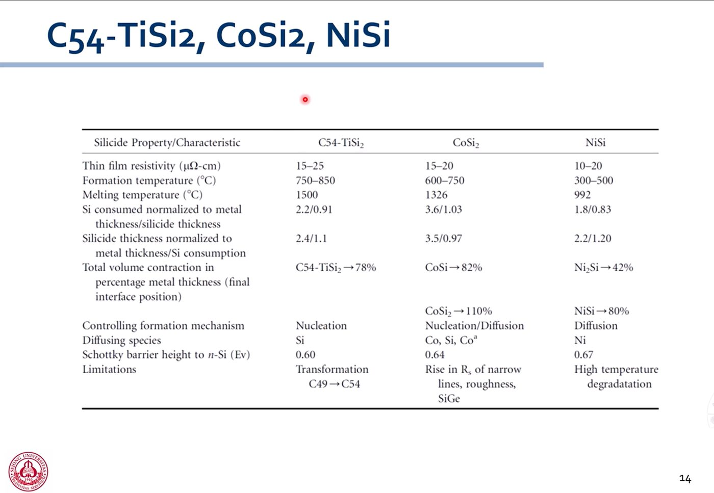
- TiSi2도 선폭이 넓을 때는 괜찮았는데 선폭이 작아짐에 따라서 변경이 필요했다. 왜냐하면 TiSi2이 저저항이 되려면 C54가 되어야 한다.
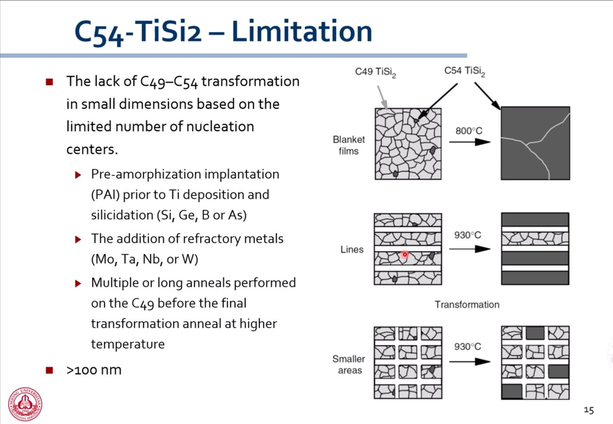
- TiSi2를 사용하는 원리는 내부의 핵이 성장해서 큰 결정립계를 만들어서 저항이 낮은 것이다. 하지만 회로가 얇아지면 그 회로 안에 핵이 있을 수도 있고, 없을 수도 있다. 이 경우에 문제가 생기는 것이다. 핵이 없는 곳은 결정립계가 많으니 저항이 클 수 밖에 없다.
- 그래서 선폭이 100nm이하 되면서는 사용하지 못하게 되었다.
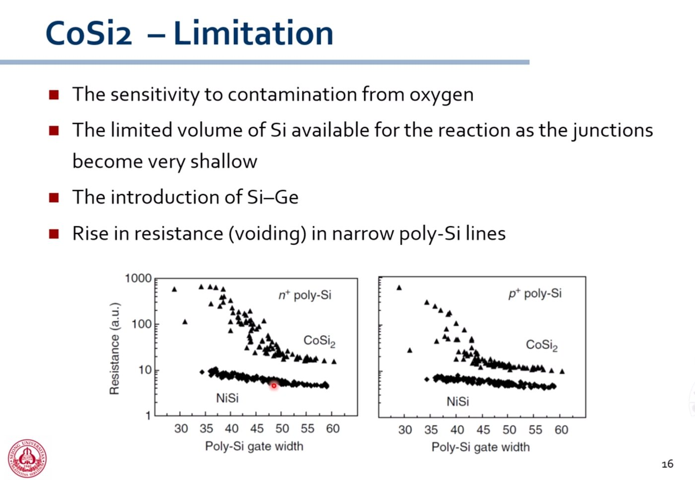
- 그래서 CoSi2를 사용하게 되었지만 이마저도 50nm 이하부터는 사용하지 못하게 되어 NiSi를 사용하게 되었다.
- 근데 또 요즘에는 NiSi를 사용하지 않는다고 한다.
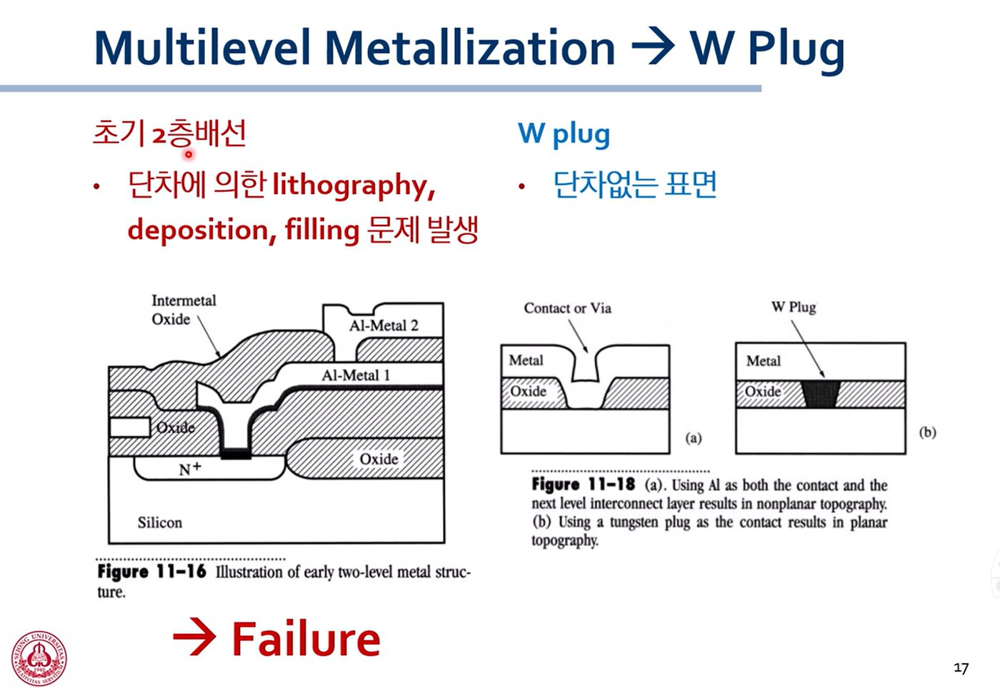
- 구멍이 작아질수록 더 이상 Sputtering 방식으로 Step coverage가 좋지 않기 때문에 채울 수 없었다.
- 따라서 2층, 3층 배선이 되면서 좁은 Trench를 채우기 위해 W plug를 사용하게 되었다.
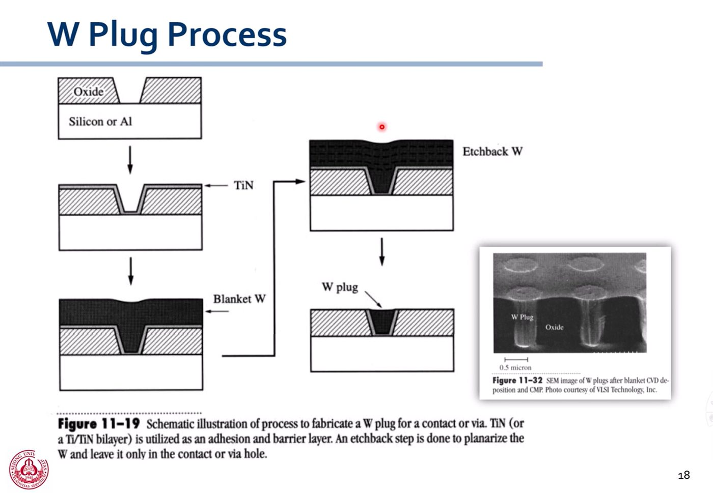
(이건 강의 내용은 아님)
- Ti는 여기 그림에는 없지만 일반적으로 Si위에 Ti를 증착하고, Annealing 해서 TiSi2를 생성한다. 그리고 TiN을 통해서 확산 방지를 시킨다.
- TiN이 필요한 이유는 WF₆ + 3H₂ → W + 6HF CVD 방식으로 증착할 때 HF가 생성되고, 이에 따라 아래 막인 Si와 SiO2막과 반응하게 된다. 따라서 TiN를 통해서 F가 확산되어 들어가는 것을 막아준다.
(강의 내용)
- W은 구멍을 채우는 데에만 사용하게 된다. 그리고 위 부분은 비저항이 낮은 Al을 사용한다. (W는 사실 좁은 곳을 채우기 위함인거지 특성이 좋아서 사용하는건 아니니까)
- W를 에치할 때는 CMP를 사용해서 갈아내면 된다. 아니면 F 계열 gas를 사용해서 etch를 해주면 SiO2에서 멈춘다고 한다.
대상: “W를 에치할 때는 CMP를 사용해서 갈아내면 된다. 아니면 F 계열 gas를 사용해서 etch를 해주면 …”
그러면 TiN은?
Ref) GPT 정보이긴 하지만 실제로 이렇게 비저항 값이 높음
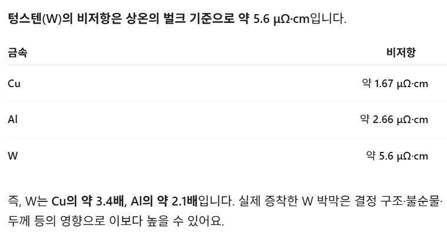
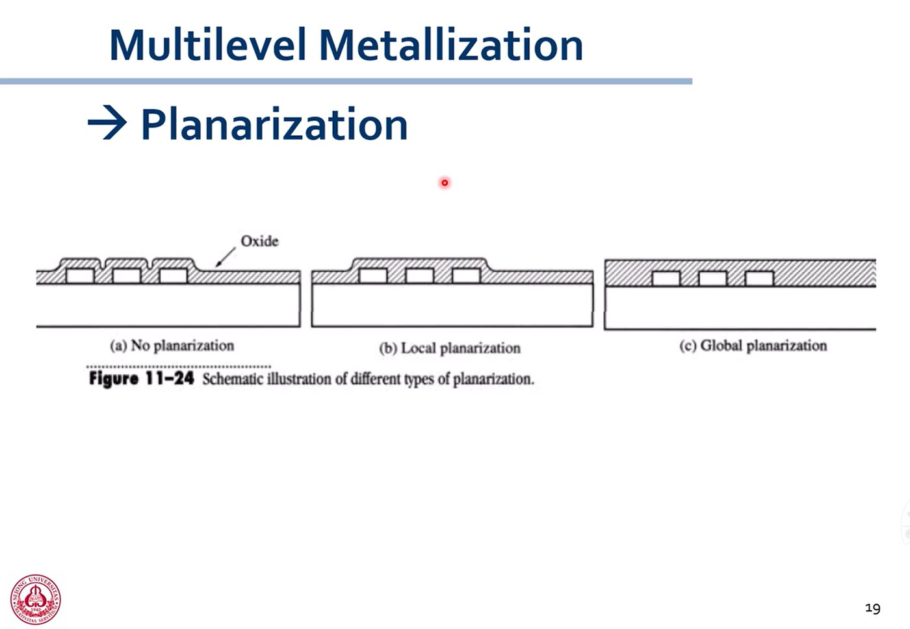
- CMP의 등장 이유는 이미 존재하고 있는 곳 위에 증착이 되기 때문에 두께가 균일하게 증착되지 않고, 따라서 CMP를 통해서 갈아줘야한다.
- 왜냐하면 그 다음 Photo 공정을 진행할 때 초점이 안잡힐테니까
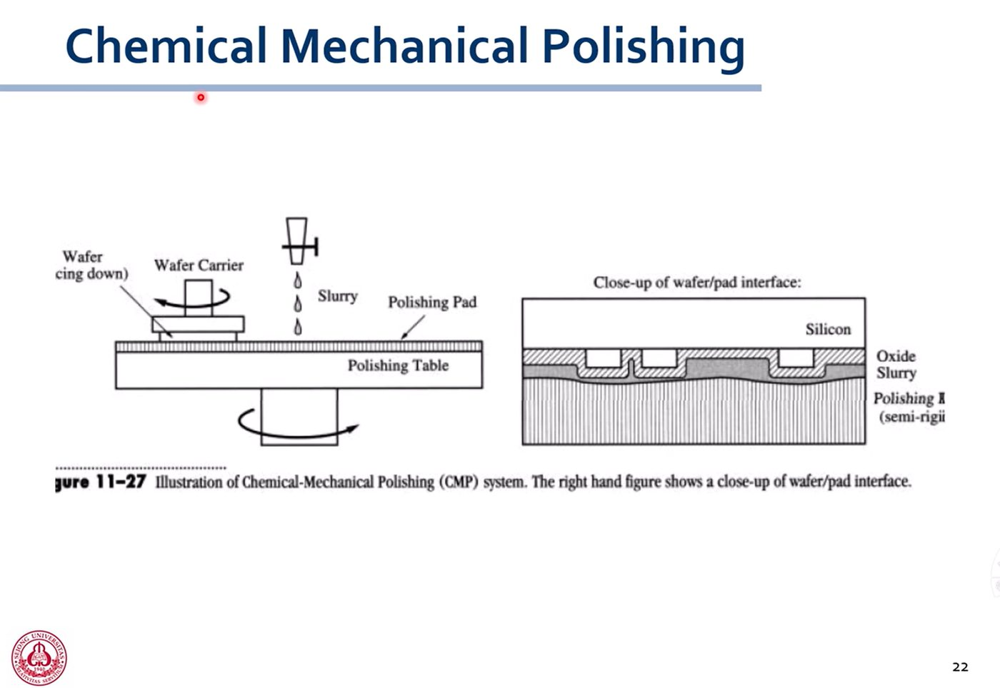
- CMP를 사용하고서부터 평평하게 쌓는 것이 가능해졌다.
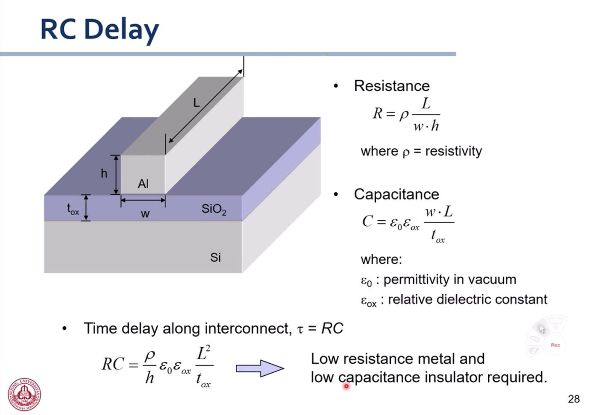
- RC delay는
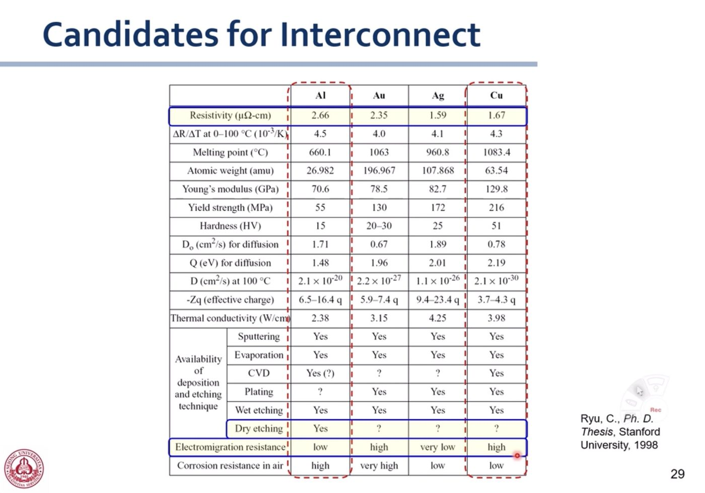